MI BIOGRAFIA
Mi Biografia
Me llamo Ronny Wilfredo Sutuj Gutierrez tengo 17 años
acutalmente estoy estudiando el ultimo año de quinto bachillerato en ciencias y letras con orientacion en computacion
toda mi vida he crecido en San Miguel Pochuta Chimaltenango inicie a estudiar parvulos a los 6 años. A los 7 años ingrese al grado de primero de primaria
fue un buen año termine el grado de primero de primaria y a los 8 años inicie el grado de segundo de primaria fue un año donde conoci e hice muchos amigos, termine el grado de segundo primaria
e inciie a a cursar el grado de tercero de primaria en este año tuve la oportuidad de ir a traer la antorcha en las fuentes georginas en Xela
Termine de cursar el año de tercero de primaria e incie con el grado de cuarto primaria a los 10 años en este año tuve la oportunidad de ser integrante de la banda escolar
termine el grado de caurto primaria y a los 11 años inicie a cursar el grado de quinto de primaria en este año tambien fui integrante de la banda escolar y conoci a mas amigos nuevos termine el grado de quinto de primaria
e inicie a los 12 años con el grado de sexto el ultimo año de primaria en este año conoci a mas amigos y tuve la buena fortuna de graduarme de primaria para poder iniciar el grado de nivel basicoS
a los 13 años incie a estudiar el grado de nivel basico en ente año conoci a varios amigos que hoy en dia aun conservo su amistad termine de cursar el grado de primero basico y a los 14 años incie con el grado de segundo basico
en este año tuve la oportuidad de conocer el maravilloso mundo de la musica y me parecio muy interesante, en este año aprendi a tocar varios instrumentos en los cuales estan
el el teclado, la trompeta, la marimba y la guitarra que es uno de mis instrumentos favoritos
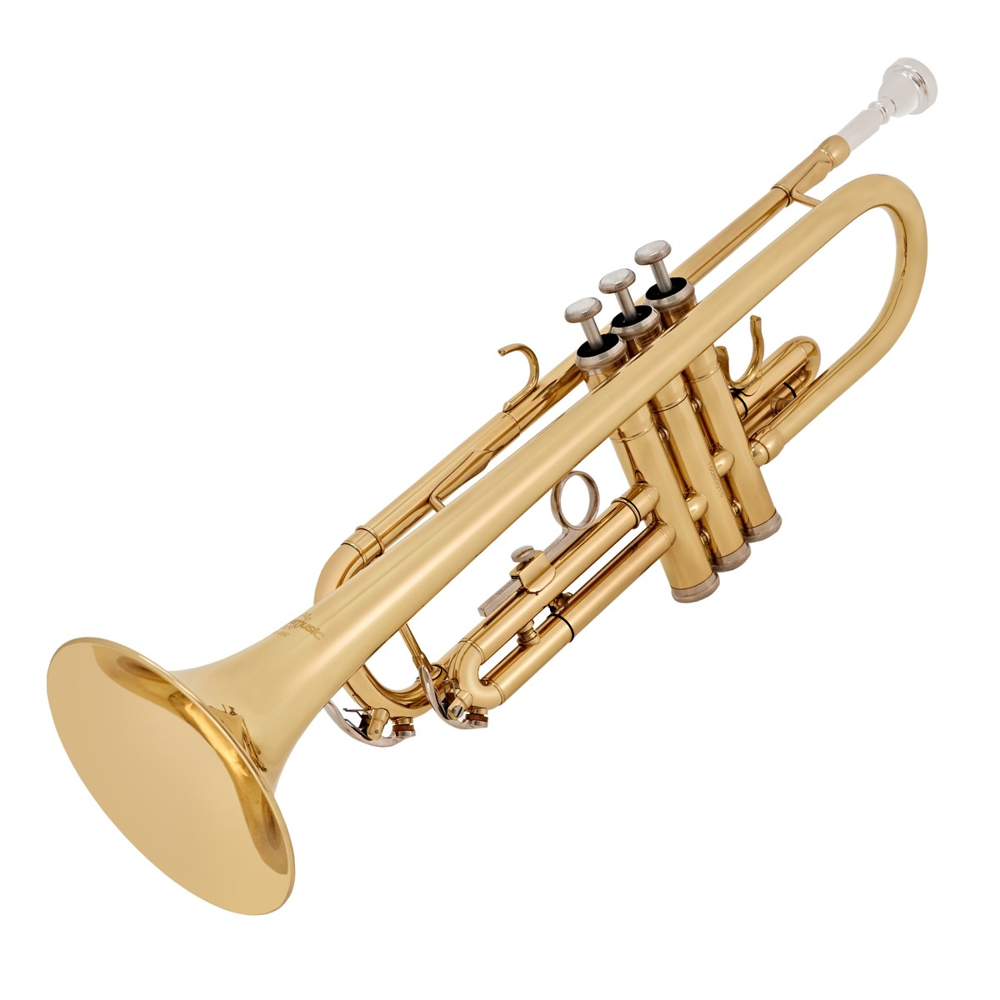
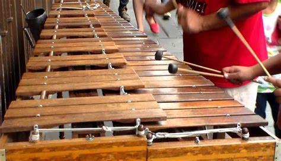
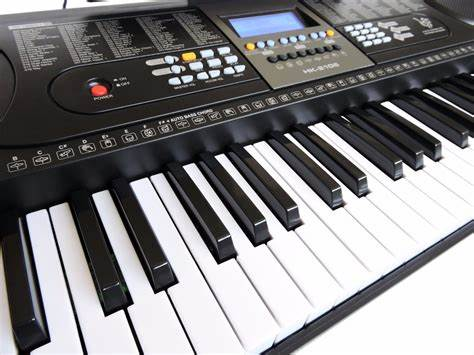
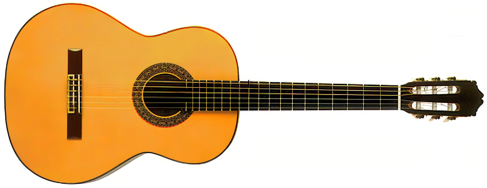
a los 15 años incie con el grado de tercero basico y finalmente me gradue del nivel basico e inicie con el grado de diversificado, inicie a estudiar el grado de cuarto bachillerato en ciencias y letras en Orientacion el computacion
en el Instituto nacional de educacion diversificada "San Miguel"
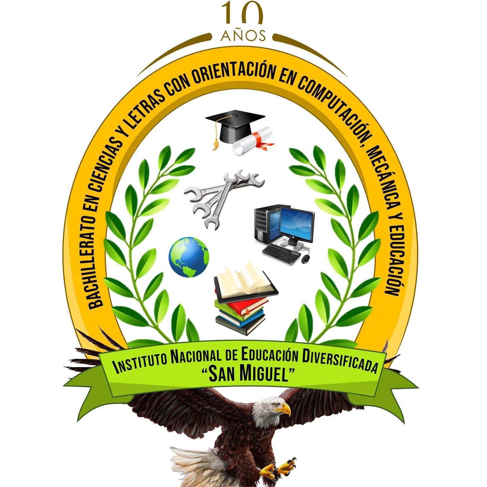
acutalmente estoy cursando el grado de quinto bachillerato el dia de hoy estamos haciendo examenes ajaja esta pagina es un examen jsjsjsj
esperando graduarme de bachiller en computacion jsjsjsj
POROMOCION 2022, 2023: COMIENTO PIZZA CON BEANS
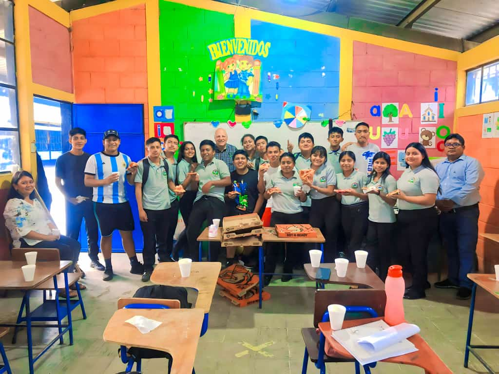
COMPAS DE QUINTO COMPUTACION
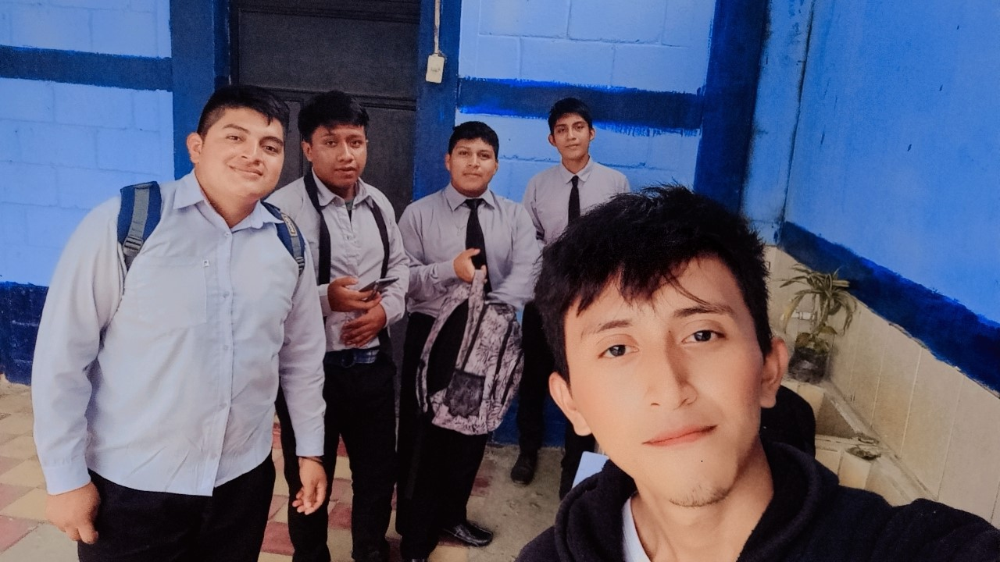
SAN MIGUEL POCHUTA CHIMALTENANGO
 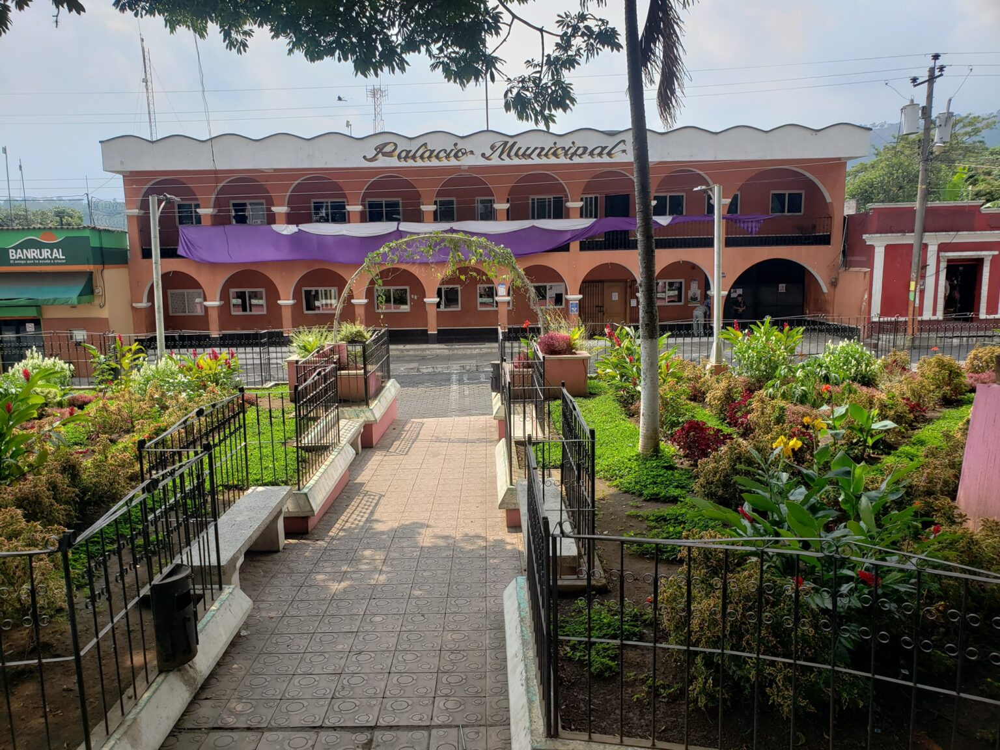
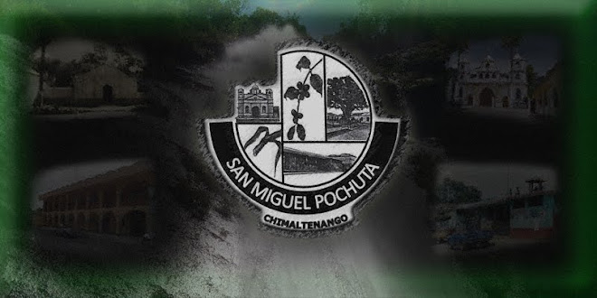
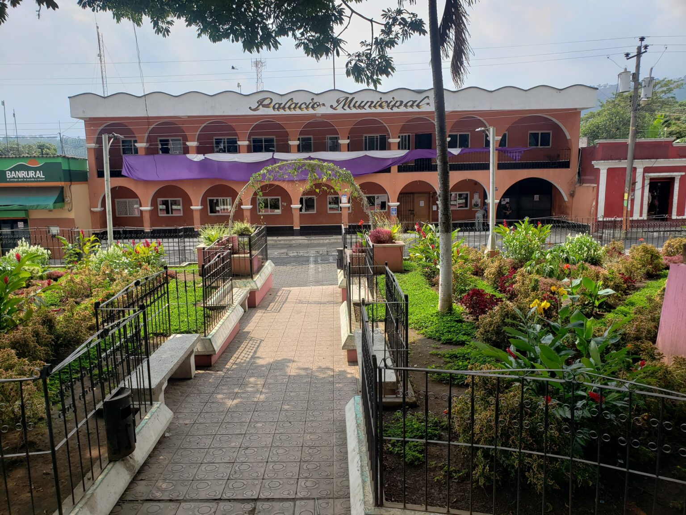
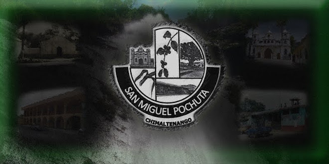